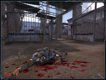
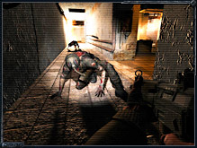

Обновление до версии 1.0006
Патч версии 1.0006 исправляющий проблемы предыдущих версий игры "S.T.A.L.K.E.R."
Страница патчаНОВОСТИ
Сталкеры всех стран, объединяйтесь!
14 января 2011
Серия S.T.A.L.K.E.R., без преувеличения, популярна не только в странах бывшего Советского Союза, но и у зарубежных игроков. Вселенная игры привлекает всё больше и больше людей со всех концов нашей планеты, а рост интереса к загадочной Зоне не продолжает падать до сих пор, напротив, он прогрессирует. Мы, возможно, редко задумываемся, а каким видят S.T.A.L.K.E.R. западные фаны игры? Что они в нем ценят и чего ждут от будущего сиквела?
Администрация сайта GSC-Fan.Com объявляет сбор вопросов для зарубежного сообщества Official S.T.A.L.K.E.R. в социальной сети Facebook. У вас есть замечательная возможность взглянуть на вселенную S.T.A.L.K.E.R. глазами поклонников игры с любых уголков мира – Англии, США, Германии, Италии и даже Африки! Свои вопросы оставляйте на форуме GSC-Fan.com. Предъявляемые требования к вопросам просты – пожалуйста, сформулируйте их чётко, грамотно и лаконично. Постарайтесь сделать вопрос интересным и оригинальным.
Период распродаж на STEAM
30 декабря 2010
В эти праздничные дни, сервис цифровой дистрибуции STEAM проводит новогоднюю распродажу - до 3 января 2011 г. у вас есть возможность приобрести игры GSC Game World с уникальной скидкой в 50%! Серия "Казаки", S.T.A.L.K.E.R., "Герои Уничтоженных Империй" стали как никогда доступными.
Также многим из вас будет приятно узнать, что оплата на STEAM теперь возможна и посредством Webmoney, что сделает процесс покупки еще проще.
Для перехода на страницу каталога с играми нажмите здесь.
Все новостиПРЕССА
Обзор на www.thg.ru
Своими впечатлениями и оценками игры "S.T.A.L.K.E.R." делятся журналисты сайта www.thg.ru.
Просто представьте на секунду, что игровой мир S.T.A.L.K.E.R. реален. С этой игрой это будет очень легко. И в десятый раз, разглядывая красоту проработки пейзажей на экране с бездыханным телом главного героя, ставшего жертвой разъярённого мутанта, подумайте о том, что было бы в том случае, если бы монитор компьютера не отделял вас от этого страшного мира.
Все обзорыСКРИНШОТЫ
  Все скриншоты